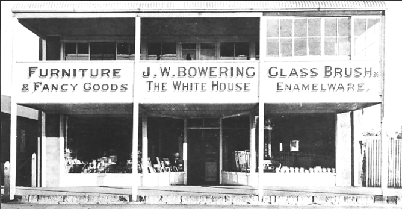
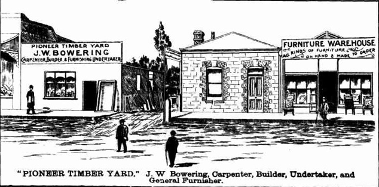
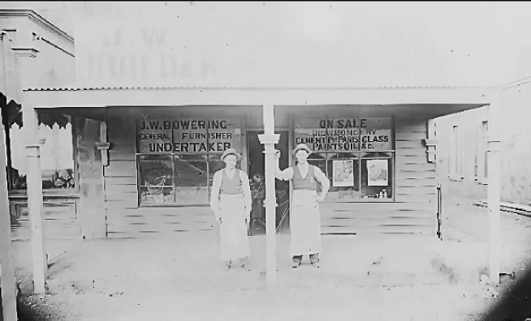
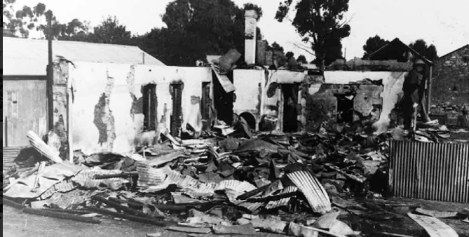
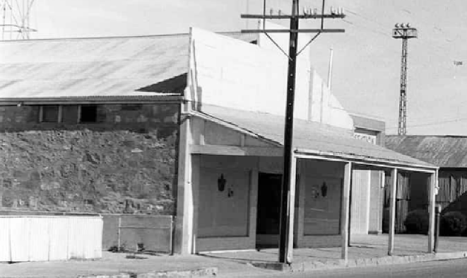
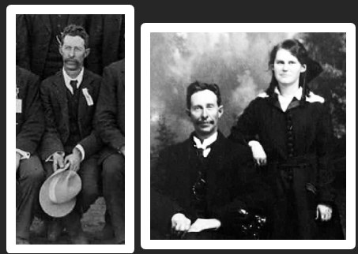

R.S.L. Clubrooms
The present RSL clubrooms are built on Block 1 lot 5 of Section 216 which was originally part of Mr JH Koch’s land.

The block was purchased by builder Simeon Garrett in 1880 where he established a residence and opened a business. Mr Garrett sold up in 1889, and the business was purchased by one of his workers Jesse Wheatley Bowering. Jesse had come to Peterborough as a young man and worked as a builder for Mr Garrett.
Jesse ran a variety of businesses: the Pioneer Timber Yard (next to the Pioneer Store), a Furniture Warehouse as well as a builder, carpenter and undertaker.

Petersburg Times
Friday 15th December 1893
Jesse improved his store several times including after the 1898 fire which destroyed the Pioneer Store next door and badly scorched his furniture store.

JW Bowering- c. 1897
Photo – Lionel Noble Collection

JW Bowering’s store updated after Pioneer Store Fire in 1898
Photo – Lionel Noble Collection
In late 1912 Jesse built a new two-story shop on the site of his previous store and named it “The White House.” Petersburg now had three “White businesses”; as well as JW Bowering’s there were TH Chinner’s “The White Store” and EA Dobbie’s “The White Shop”.
JW Bowering’s new store “The White House”
Photo – Lionel Noble Collection
Jesse and Mary Bowering moved to Adelaide in 1920, and Jesse’s business was managed by his son David ‘Norman’ Bowering and Harold ‘Tennyson’ Prisk and was known as Bowering & Prisk.
A fire thought to be sparked by a passing train burned down the two storey emporium of Bowering & Prisk on Monday 21st March1923 shortly after midnight. The store-room and shop, which contained a large quantity of furniture and other stock were completely destroyed.

Ruins of Bowering and Prisk – March 1923
Photo – Lionel Noble Collection
Jesse and Mary Bowering returned to Peterborough in 1926 and by July had rebuilt a new store where the old one stood.
This shop traded as J W Bowering & Son.

Former shop of JW Bowering & Son - 1976
Photo – Lionel Noble Collection
The news that Jesse Wheatly Bowering died on Monday 3rd February at the age of 72, was met with deepest regret and sympathy by all who knew him. Jesse Bowering held office on many institutions and committees over the years including; The Temperance Society, Petersburg Literary Society, Starr-Bowkett Society (valuator), Baptist Church, District Trained Nursing Society, The Petersburg Institute, Great Northern Masonic Lodge, Petersburg Agricultural Society, State School Board of Advice, Superintendent of State School, The Liberal Union, and The Cheer-up-Society. Jesse played cricket and was a Justice of the Peace. He was elected mayor in 1902 until 1905 and served as a councillor for 16 years. Jesse was heavily involved with the town’s tree planting (financially and with labour) planting and tending many hundreds of trees which have been grown over the years.
As a builder he built many of the shops and houses in the town including the additions to the old Town Hall, and served as the towns undertaker for over 30 years.
Jesse was married twice with his first wife Hannah (nee Chapman) sadly passing away in 1891 aged 25. They had one child, Minnie Gertrude Bowering. Jesse remarried in 1893 to Mary Agnes Golding, and they had four children; Norman Wheatley (d. 1894 8 months), David Norman, Selma Mary and Perdita Quenburga (Queenie).
Jesse’s son Norman assumed ownership of the store and when he retired in 1954 it was sold to the Boy Scouts association (SA Branch).

Jesse Wheatley Bowering and daughter Selma Bowering c. 1910
Photo – Lionel Noble Collection